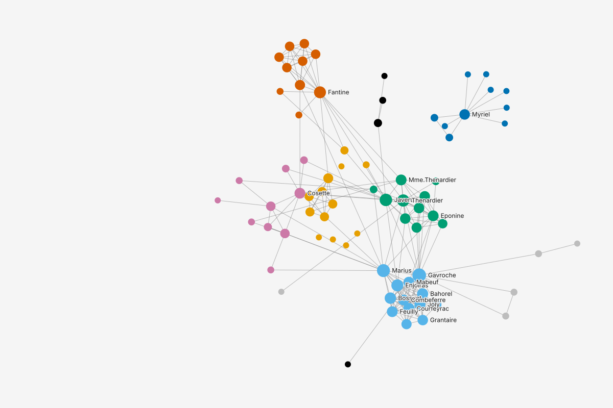
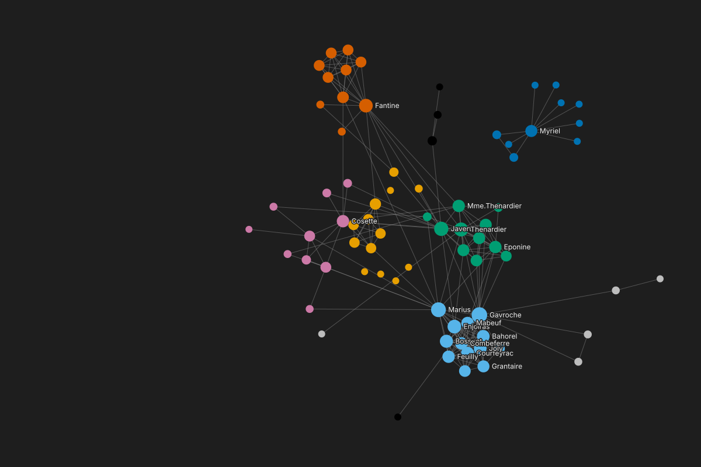

Group color group
214
813
411
110
6 more
NodesEdges
Filtered graph: 76 of 77 nodes. Sorted by degree.
| label | group 10 values | degree | closeness |
|---|---|---|---|
| Gavroche | 8 | 21 | |
| Marius | 8 | 18 | |
| Javert | 4 | 16 | |
| Thenardier | 4 | 15 | |
| Enjolras | 8 | 14 | |
| Fantine | 3 | 14 |
Les Miserables with Valjean filtered out: 76 characters in 7 components. Closeness then needs a correction, and without it the bishop's cut-off household of 10 would rank first. The name of the result says which formula it used.
Alex has filtered out Valjean. Without him the graph falls into 7 components: the bishop's household of 10 is cut off, and 5 characters are left alone. The Catalog row carries the variant closeness will use; its tooltip says why, before any click.


| label | group 10 values | degree | closeness |
|---|---|---|---|
| Gavroche | 8 | 21 | |
| Marius | 8 | 18 | |
| Javert | 4 | 16 | |
| Thenardier | 4 | 15 | |
| Enjolras | 8 | 14 | |
| Fantine | 3 | 14 |
Closeness (WF-corrected): Javert, Enjolras, Courfeyrac, Marius, Combeferre. The bishop's household sits low: Myriel is 62nd, at 0.161. The name is the column header too. Clicking the variant word offers the one alternative that needs no correction, Harmonic centrality, as a new sibling result.
| label | group 10 values | degree | closeness (WF-corrected) 0 to 0.997 |
|---|---|---|---|
| Javert | 4 | 16 | 0.997 |
| Enjolras | 8 | 14 | 0.983 |
| Courfeyrac | 8 | 13 | 0.960 |
| Marius | 8 | 18 | 0.930 |
| Combeferre | 8 | 11 | 0.928 |
| Bossuet | 8 | 12 | 0.906 |
| Cosette | 5 | 10 | 0.897 |